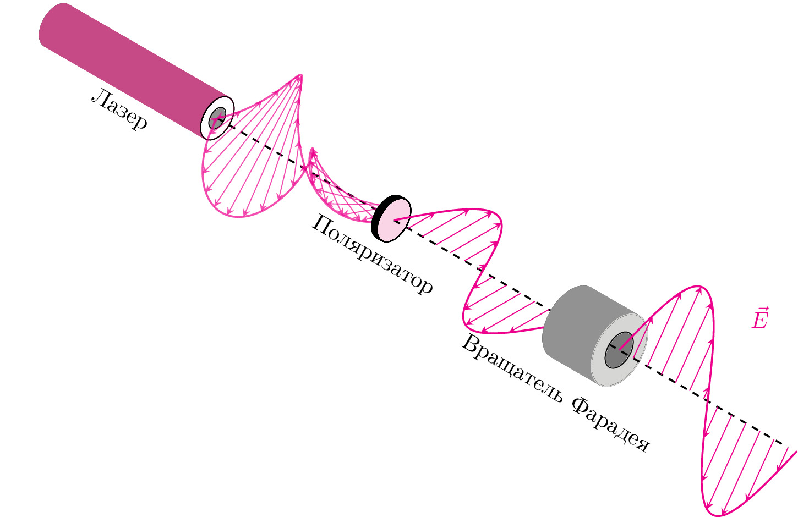

pre.tex
\documentclass[tikz]{standalone}\input{pre.tex}\begin{document}\begin{tikzpicture}[x={(0.866cm,-0.5cm)}, y={(0.866cm,0.5cm)}, z={(0cm,1cm)}, scale=1.0,
%Option for nice arrows
>=stealth, %
inner sep=0pt, outer sep=2pt,%
axis/.style={thick,->, dashed},
wave/.style={thick,color=#1,smooth},
polaroid/.style={fill=black!60!white, opacity=0.3},
]
% Colors
\colorlet{darkgreen}{green!50!black}
\colorlet{lightgreen}{green!80!black}
\colorlet{darkred}{red!50!black}
\colorlet{lightred}{red!80!black}
% Frame
\coordinate (O) at (0, 0, 0);
% \draw[axis] (O) -- +(0, 2.5, 0) node [right] {+y};
% \draw[axis] (O) -- +(0, 0, 2) node [above] {+z};
\begin{scope}[canvas is yz plane at x = -6,
every node/.append style ={}]
\draw [fill=white] (0,0) circle (0.3cm);
\draw [fill==black!50] (0,0) circle (0.15cm);
\end{scope}
\foreach \x in{-6,-5.99,...,-3.14}{
\begin{scope}[canvas is yz plane at x = \x,
every node/.append style ={}]
\draw [magenta!80!black] (0,0) circle (0.3cm);
\draw [fill=white] (0,0) circle (0.15cm);
\end{scope}
}
\begin{scope}[canvas is yz plane at x = -3.14,
every node/.append style ={}]
\draw [fill=white] (0,0) circle (0.3cm);
\draw [fill=black!50] (0,0) circle (0.15cm);
\end{scope}
\draw[draw=none] (-7,0,-1) -- (-3,0,-1) node [above, sloped, midway]{Лазер};
\draw[draw=none] (-4,0,-1) -- (3,0,-1) node [above, sloped, midway]{Поляризатор};
\draw[thick,dashed] (-3.14,0,0) -- (O);
\draw[draw=none] (0,0,-1.5) -- (5.5,0,-1.5) node [above, sloped, midway]{Вращатель Фарадея};
% monochromatic incident light with electric field
\draw[wave=magenta, opacity=0.7, variable=\x, samples at={-3.14,-3.13,...,0}]
plot (\x, { cos(1.0*\x r)*sin(2.0*\x r)}, { sin(1.0*\x r)*sin(2.0*\x r)})
plot (\x, {-cos(1.0*\x r)*sin(2.0*\x r)}, {-sin(1.0*\x r)*sin(2.0*\x r)});
\foreach \x in{-3.14,-3,...,0}{
\draw[color=magenta, opacity=0.7,->]
(\x,0,0) -- (\x, { cos(1.0*\x r)*sin(2.0*\x r)}, { sin(1.0*\x r)*sin(2.0*\x r)});
\draw[color=magenta, opacity=0.7,->]
(\x,0,0) -- (\x, {-cos(1.0*\x r)*sin(2.0*\x r)}, {-sin(1.0*\x r)*sin(2.0*\x r)});
}
\foreach \x in{-0.1,-0.099,...,0}{
\begin{scope}[canvas is yz plane at x = \x,
every node/.append style ={}]
\draw [black] (0,0) circle (0.3cm);
\draw [fill=white] (0,0) circle (0.15cm);
\end{scope}
}
\begin{scope}[canvas is yz plane at x = 0,
every node/.append style ={}]
\draw [fill=magenta!20] (0,0) circle (0.3cm);
% \draw [fill=black!50] (0,0) circle (0.15cm);
\end{scope}
% \draw[thick,<->] (0,-1.75,-1) -- (0,-0.75,-1);
% Electric field vectors
\xdef\pos{3.1415}
\xdef\posp{4}
\xdef\pospB{4.25}
\xdef\pospb{4.5}
\xdef\pospp{4.01}
\xdef\posd{7.1530}
\draw[axis] (O) -- +(\posp, 0, 0);% node [right] {+x};
\draw[wave=magenta, variable=\x,samples at={0,0.01,...,\pos}]
plot (\x,{sin(2*\x r)},0)node[anchor=north]{$\vec{E}$};
%Polarized light between polaroid and thin section
\foreach \x in{0.25, 0.5,...,3.1415}
\draw[color=magenta,->] (\x,0,0) -- (\x,{sin(2*\x r)},0);
\begin{scope}[canvas is yz plane at x = \pos,
every node/.append style ={}]
\draw [fill=white] (0,0) circle (0.5cm);
\draw [fill==black!50] (0,0) circle (0.25cm);
\end{scope}
\foreach \x in{\pos,3.1515,...,\posp}{
\begin{scope}[canvas is yz plane at x = \x,
every node/.append style ={}]
\draw [fill=white, color=black!50] (0,0) circle (0.5cm);
\draw [fill=white, color=black!50] (0,0) circle (0.25cm);
\end{scope}
}
\begin{scope}[canvas is yz plane at x = \posp,
every node/.append style ={}]
\draw [black, fill=black] (0,0) circle (0.5cm);
\draw [fill=white, color=black!20!white] (0,0) circle (0.5cm);
\draw [fill=black!60] (0,0) circle (0.25cm);
\end{scope}
\draw[thick, dashed] (\posp-0.17, 0, 0) -- (\posp+3,0,0);% node [right] {+x};
\foreach \x in{\pospB,\pospb,...,\posd}
\draw[color=magenta,->] (\x,0,0) -- (\x,{sin(2*(\x-\posp) r)*cos(45)},{sin(2*(\x-\posp) r)});
\draw[wave=magenta, variable=\x,samples at={\posp,\pospp,...,\posd}]
plot (\x,{sin(2*(\x-\posp) r)*cos(45)},{sin(2*(\x-\posp) r)});%node[anchor=north]{$\vec{E}$};
\draw[magenta] (6.5,0,2) node[anchor=north]{$\vec{E}$};
% \foreach \x in{7.1530,7.1630,...,7.2530}{
% \begin{scope}[canvas is yz plane at x = \x,
% every node/.append style ={}]
% \draw [black] (0,0) circle (0.3cm);
% \draw [fill=white] (0,0) circle (0.15cm);
% \end{scope}
% }
% \begin{scope}[canvas is yz plane at x = 7.2530,
% every node/.append style ={}]
% \draw [fill=magenta!20] (0,0) circle (0.3cm);
% % \draw [fill=black!50] (0,0) circle (0.15cm);
% \end{scope}
% \draw[wave=magenta, variable=\x,samples at={7.2530,7.2630,...,10.4}]
% plot (\x,{sin(2*(\x-7.2530) r)/2},0);
% %Polarized light between polaroid and thin section
% \foreach \x in{7.4530,7.75,...,10.4}
% \draw[color=magenta,->] (\x,0,0) -- (\x,{sin(2*(\x-7.2530) r)/2},0);
% \draw[axis] (7.4530, 0, 0) -- ++ (5,0,0) node [right] {+x};
% \foreach \x in{10.4,10.41,...,11}{
% \begin{scope}[canvas is yz plane at x = \x,
% every node/.append style ={}]
% \draw [fill=white] (0,0) circle (0.5cm);
% \end{scope}
% }
% \begin{scope}[canvas is yz plane at x = 11,
% every node/.append style ={}]
% \draw [fill=black!50] (0,0) circle (0.5cm);
% \end{scope}
% %
% \draw (3,1,1) node [text width=2.5cm, text centered]{Поляризованный свет};
% \draw (10,1,1) node [text width=2.5cm, text centered] {Поляризованный и повернутый свет};
\end{tikzpicture}\end{document}